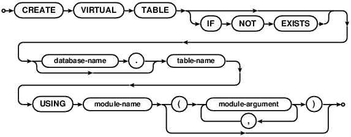

Choose any three.
|
|
SQLite里的SQL
SQL As Understood By SQLite
CREATE VIRTUAL TABLE

虚表是一个外部扩展存储接口或计算引擎，使其看起来像是一个表，但是在数据库文件中实际存储信息。
A virtual table is an interface to an external storage or computation
engine that appears to be a table but does not actually store information
in the database file.
通常来说，我们可以在虚表上做任何可以在普通表上进行的操作，不过不能在虚表上创建索引和触发器。一些虚表的实现还可能会增加一些额外的限制。例如，许多虚表都是只读的。
In general, you can do anything with a virtual table that can be done
with an ordinary table, except that you cannot create indices or triggers on a
virtual table. Some virtual table implementations might impose additional
restrictions. For example, many virtual tables are read-only.
<module-name> 是一个实现虚表的对象名。<module-name> 必须在使用CREATE VIRTUAL TABLE语句之前使用sqlite3_create_module() 或 sqlite3_create_module_v2()接口注册到SQLite数据库链接上。模块可能会需要若干个逗号分隔的参数。参数只要保证小括号匹配，可以是任何文本。参数的语法十分普通，参数可以被看做为传统的CREATE TABLE语句中的列定义 。SQLite不经过任何处理就直接将参数传递给模块实现的xCreate 和 xConnect函数。模块的实现负责自己的参数的解析和解释。
The <module-name> is the name of an object that implements
the virtual table. The <module-name> must be registered with
the SQLite database connection using
sqlite3_create_module() or sqlite3_create_module_v2()
prior to issuing the CREATE VIRTUAL TABLE statement.
The module takes zero or more comma-separated arguments.
The arguments can be just about any text as long as it has balanced
parentheses. The argument syntax is sufficiently general that the
arguments can be made to appear as column definitions in a traditional
CREATE TABLE statement.
SQLite passes the module arguments directly
to the xCreate and xConnect methods of the module implementation
without any interpretation. It is the responsibility
of the module implementation to parse and interpret its own arguments.
虚表使用普通的DROP TABLE命令来删除，没有DROP VIRTUAL TABLE命令。
A virtual table is destroyed using the ordinary
DROP TABLE statement. There is no
DROP VIRTUAL TABLE statement.